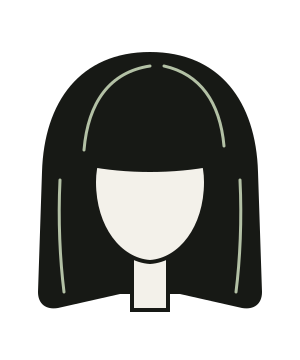
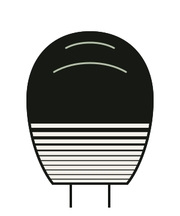
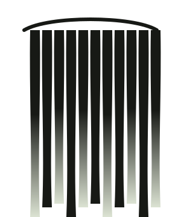
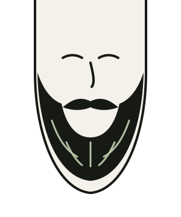

Tarifs 2026 · prix TTC
Prestations & tarifs.
Chaque prix comprend le shampoing, un soin rapide et le coiffage. Il est confirmé avant de commencer et ne bouge plus. La retouche de frange, elle, est offerte entre deux coupes.

Femme
Coupes sur cheveux raides, ondulés, bouclés ou crépus. Les longueurs se mesurent cheveux secs : courts au-dessus de la nuque, mi-longs jusqu’aux épaules, longs au-delà.
| Prestation | Durée | Prix |
|---|---|---|
| Coupe & brushing, cheveux courtsDiagnostic, shampoing, coupe et brushing. | 45 min | 52 € |
| Coupe & brushing, cheveux mi-longsDiagnostic, shampoing, coupe et brushing. | 1 h | 58 € |
| Coupe & brushing, cheveux longsDiagnostic, shampoing, coupe et brushing. | 1 h 15 | 64 € |
| Coupe sur cheveux bouclés ou crépusCoupe à sec, boucle par boucle, puis définition et séchage au diffuseur. | 1 h 30 | 72 € |
| Brushing seulCheveux courts ou mi-longs ; 8 € de plus sur cheveux longs. | 30 min | 30 € |
| Chignon ou coiffure d’événementMariage, soirée, photo. Un essai une semaine avant est conseillé. | 1 h | 65 € |
| Retouche de frangeEntre deux coupes, sans rendez-vous, du mardi au samedi. | 10 min | offerte |

Homme
Aux ciseaux, à la tondeuse ou les deux. Malik et Inès coupent aussi les cheveux longs et bouclés des hommes, sans supplément caché.
| Prestation | Durée | Prix |
|---|---|---|
| Coupe hommeShampoing, coupe aux ciseaux ou à la tondeuse, coiffage. | 30 min | 32 € |
| DégradéAméricain, à blanc ou bas, finitions et contours au rasoir. | 45 min | 36 € |
| Coupe à la tondeuseUne ou deux hauteurs, sans shampoing. | 20 min | 22 € |
| Coupe sur cheveux longs ou bouclésCoupe à sec, puis coiffage pour que la forme tienne. | 45 min | 42 € |
Enfant
Un vrai miroir, un vrai tablier, et un petit fauteuil pour les moins de six ans. Le mercredi après-midi est le moment le plus calme pour une première coupe.
| Prestation | Durée | Prix |
|---|---|---|
| Première coupeUne mèche gardée dans une petite enveloppe, et un diplôme pour la maison. | 20 min | 15 € |
| Moins de 6 ansCoupe aux ciseaux, sans shampoing. | 20 min | 18 € |
| De 6 à 12 ansShampoing, coupe et coiffage. | 30 min | 22 € |
| Ado, de 12 à 17 ansCoupe et coiffage, dégradés compris. | 30 min | 28 € |

Couleur & balayage
Couleurs classiques ou végétales, sur rendez-vous du mardi au vendredi. Avant une première couleur, Jo fait un diagnostic gratuit et un test d’allergie, 48 h à l’avance.
Réserver un diagnostic offert| Prestation | Durée | Prix |
|---|---|---|
| Diagnostic couleurObligatoire avant une première couleur, test d’allergie compris. | 15 min | offert |
| Patine ou glossNeutralise les reflets et ravive la brillance. | 30 min | 28 € |
| Couleur racinesClassique ou végétale, jusqu’à 3 cm de repousse. | 1 h 15 | 45 € |
| Couleur complèteRacines et longueurs, shampoing et coiffage compris. | 1 h 30 | dès62 € |
| MèchesAu papier, pour un éclaircissement net et régulier. | 2 h | dès85 € |
| BalayagePeint à main levée, patine et coiffage compris. | 2 h 30 | dès95 € |

Barbe
Au fauteuil de barbier, près de la vitrine. Serviettes chaudes, coupe-chou à lame neuve à chaque client, et une huile à la figue pour finir.
| Prestation | Durée | Prix |
|---|---|---|
| Entretien de moustacheTaille aux ciseaux et cire de mise en forme. | 10 min | 10 € |
| Taille de barbe à la tondeuseHauteur au choix, contours nets. | 15 min | 18 € |
| Barbe sculptéeTaille, contours au rasoir, serviette chaude et huile. | 30 min | 26 € |
| Rasage à l’ancienneCoupe-chou, deux serviettes chaudes, baume apaisant. | 35 min | 32 € |
Forfaits
Les bonnes combinaisons.
-
Coupe homme + barbe sculptée
52 €
Au lieu de 58 €. Une heure au fauteuil, serviette chaude comprise. Le classique du samedi matin.
-
Couleur racines + coupe & brushing
dès 92 €
Sur cheveux mi-longs, en une seule séance de 2 h 15, avec Jo puis Inès.
-
Moins de 26 ans
−10 %
Sur toutes les coupes, le mardi et le mercredi, sur présentation d’une pièce d’identité.
Bons cadeaux : en vente au salon, du montant de votre choix, valables un an sur toutes les prestations.
Questions fréquentes
Avant de venir.
Faut-il prendre rendez-vous ?
Du mardi au vendredi, oui, en ligne ou par téléphone. Le samedi, de 9 h à 18 h, le salon fonctionne sans rendez-vous pour les coupes et les barbes : vous prenez un ticket à l’entrée. Les couleurs restent sur rendez-vous en semaine.
Et si je suis en retard ?
Jusqu’à dix minutes, on garde votre créneau. Au-delà, on fait au mieux : on peut raccourcir le brushing ou vous proposer un autre horaire dans la journée.
Comment annuler un rendez-vous ?
Jusqu’à la veille, en ligne ou par téléphone, sans frais. Pour un balayage, prévenez-nous 48 h avant si possible : c’est un long créneau qu’on peut proposer à quelqu’un d’autre.
Quels moyens de paiement acceptez-vous ?
Carte bancaire, paiement sans contact et espèces. Nous ne prenons plus les chèques.
Quels produits utilisez-vous ?
Des shampoings et des soins de l’atelier Brume & Ortie, fabriqués dans la Drôme, dans des flacons consignés. Pour les couleurs végétales, des poudres de plantes sans ammoniaque. Tout ce qu’on utilise est en vente au salon.
Je peux venir avec une photo ?
Avec plaisir. Apportez aussi, si vous pouvez, une photo de ce que vous ne voulez surtout pas : c’est souvent ce qui nous aide le plus.
Votre créneau
Le prix est affiché, le fauteuil vous attend.
Réservez en ligne en deux minutes, ou appelez-nous du mardi au samedi aux heures d’ouverture.